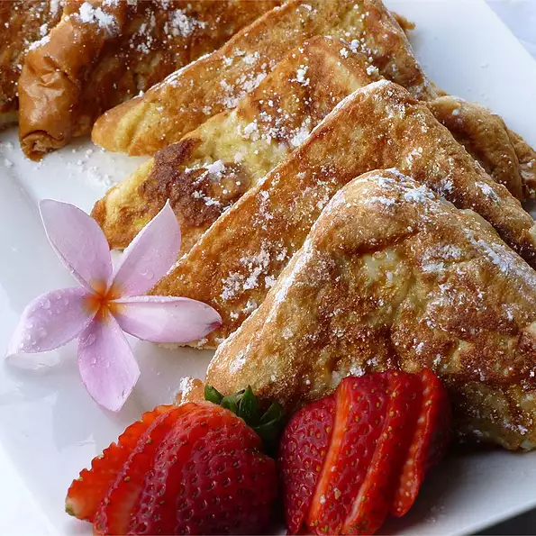

French Toast

Description
King Hawaiian Sweet Bread dipped in a rich egg batter.
Served golden brown, lightly dusted with powdered sugar
and served with whipped butter and hot syrup.
Ingredients
- 4 Slices King's Hawaiian Sweet Bread
- 4 Large Eggs
- 1/2 Cup of Milk
- 1/2 Teaspoon vanilla
- 1/4 Teaspoon ground cinnamon
- 2 Tablespoons Butter or Oil
- 2 Tablesppons Maple Syrup
Steps
- Slice bread crosswise so that each slice is about 1-inch thick. Cut larger slices into halves or thirds, if desired. Set aside.
- In a shallow mixing bowl, whisk together the eggs, milk, vanilla and cinnamon.
- Quickly dip slices (do not soak) in egg mixture and cook until golden brown on both sides.
- Keep egg mixture stirred and spices well blended.
- Sprinkle with powdered sugar and serve with warm maple syrup.